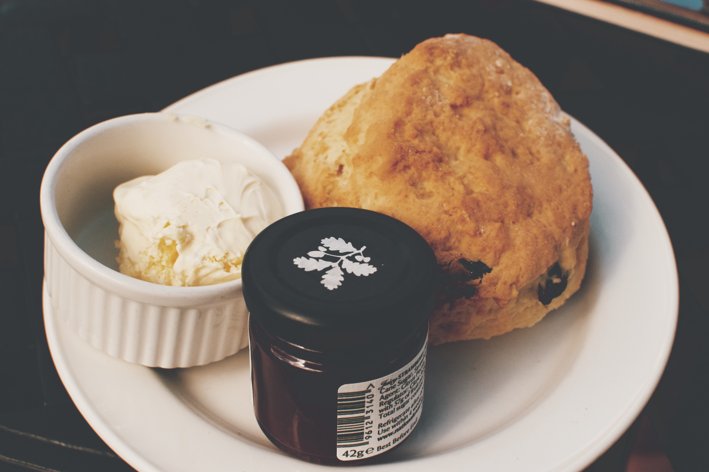

스콘(scone, 다른 말로 스칸)은 스코틀랜드에서 기원한 영국식 소형 퀵 브레드이다. 보통, 밀, 보리, 오트밀을 재료로 하여, 베이킹파우더를 팽창제(발효소) 삼아 써서 만든다. 스콘은 크림 티(다른 말로 데본셔 티)의 기본 구성 요소이다. 상업적으로 판매되는 스콘은 일반적으로 둥근 모양이다. 집에서 구워지는 스콘은 삼각형, 원형, 입방체 등 여러 다양한 모양이다.[1][2] 많은 사람들이 집에서 스콘을 만들 때는 요리책을 보고 만들기 보다 집안 고유의 방법을 따른다.